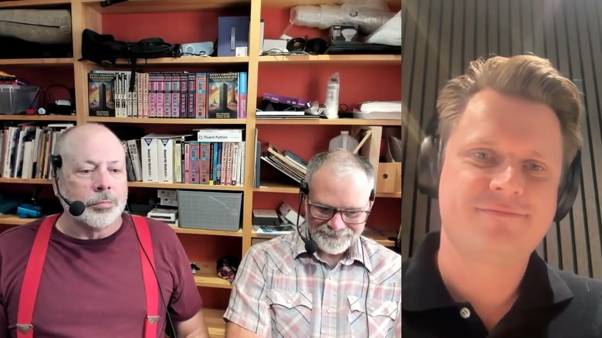
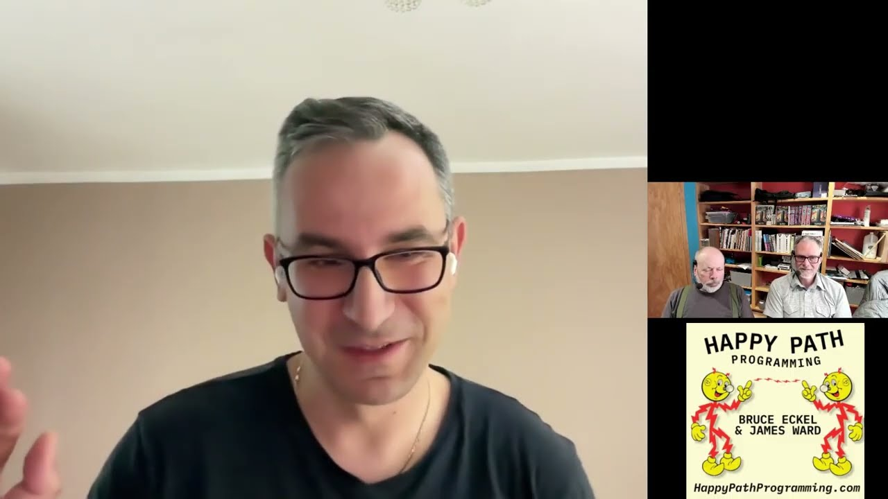
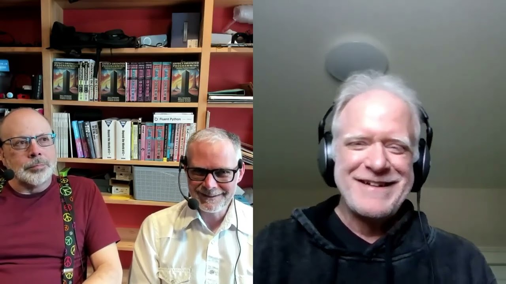
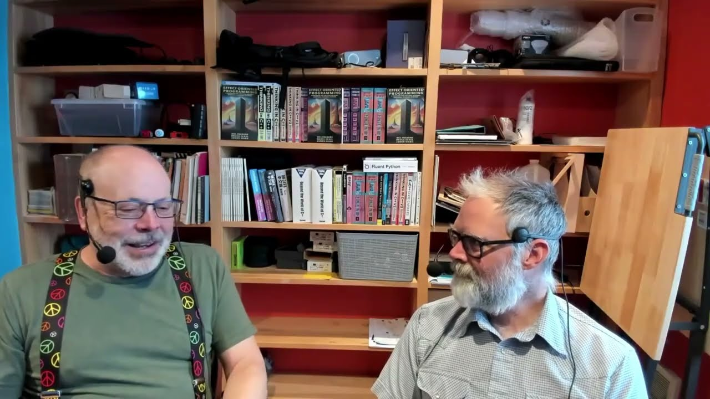
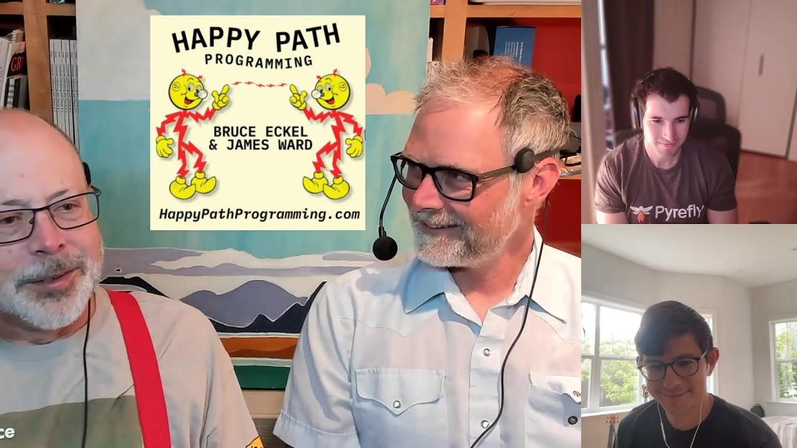
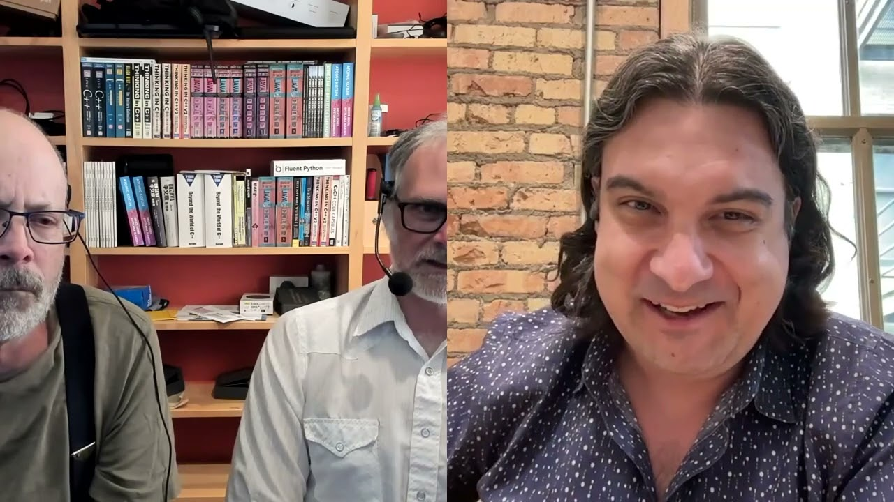

#121Effect Oriented Python
In this episode we chat with Sune Debel about his Stateless library which brings Effect Oriented Programming to Python. attempt at at Scala ZIO port to Python
🗓 Aug 03, 2026⏱ 1h 07m
Every Happy Path Programming conversation, newest first.

#121In this episode we chat with Sune Debel about his Stateless library which brings Effect Oriented Programming to Python. attempt at at Scala ZIO port to Python

#120We dive into the new Aver programming language with its creator, Szymon Teżewski: The AI-native language where code explains itself.Aver is a language where every function carries its intent, side effects are visible in the type system, and tests are executable specs next to the

#119We chat with Paul Snively ( ) about how Functional Programming has gone mainstream.Resources- Winter Tech Forum - Paul Snively's LambdaConf Talk on Verse - Paul Snively's Blog Post on the Verse Calculus - Eugenio Moggi, "Notions of Computation and Monads" (1991) - "Implementing L

#118Bruce & James recap the technology shifts of 2025 and look ahead to what may be ahead in 2026. Resources: Register for the Winter Tech Forum (March 2-6 2026 in Crested Butte, Colorado) The Eternal Return of Abstraction: Why Programming Was Never About Code Thinking in Types javad
 #117
#117
At Western State Colorado University in Gunnison on Sept 11, 2025, Bruce Eckel, Bill Venners and Dianne Marsh each give their own 10-minute perspectives on finding fulfillment in the field, especially considering the impact of AI and other recent changes in computing. The remaind
Infrastructure as Code (IaC) is "code" but without most of the benefits of being code. Sam Goodwin is reinventing IaC with Alchemy and an upcoming Alchemy Effect project which aims to manage infrastructure dependencies & provisioning in the same way we manage requirements in Effe

#115Excitement around Python type checking continues to grow and the tools continue to evolve. We chat with Aaron Pollack and Steven Troxler about Pyrefly - a Rust-based Python type checker and IDE extension. We also touch on the adoption and sentiment around types in Python's ecosys
Carl Meyer works on the ty Python type checker, built in Rust by Astral the creators of Ruff and uv. We chat about type systems, the evolution of static typing in Python, and the focus on performance. Resources: Richard Feldman: Roc compiler moving from Rust to Zig
We chat with Jennifer Reif about integrating LLMs with data using RAG, vectorized data, and Graph databases.
Rod Johnson, creator of the Spring Framework, has created a JVM-based AI Agent framework called Embabel. We dive in and learn how enterprises can build more reliable Agents using deterministic planning and domain-driven orchestration.
We chat with Steve Manuel (of dylibso.com and mcp.run) about LLM "plugins" with Wasm & MCP (Model Context Protocol).

#110Justin Reock has spent a lot of his career thinking about how to help developers be more productive. In this episode we learn about the methodologies that can help developers spend more time in "flow state" - happily coding the fun stuff. Further reading: Measuring developer prod
Lize Raes teaches us about AI models, LLMs, Tools, Agents, and MCP. Article from Anthropic on Agent architectures: Building effective agents
#108
Join us at the 2025 Winter Tech Forum! www.wintertechforum.com Projects Mentioned uv for Python TypeScript Effect Pkl CloudFormation Extras Pkl GitHub Actions Other Episodes Mentioned #81 TypeScript & Effects with Michael Arnaldi #97 The Pkl Configuration Language with Philip Höl
#107
We chat with Dave Thomas, co-author of The Pragmatic Programmer, about the joy of programming and the tensions between our and others needs.
#106
Jutta Eckstein is expanding the concepts of Agile to be a company-wide model, instead of a niche process for software developers. We chat with her about the book "Company-wide Agility with Beyond Budgeting, Open Space & Sociocracy" which she co-authored on this subject. For more
#105
Nathan Sobo is co-founder of Zed, a super-fast, collaborative, AI-powered, code editor. We chat about his journey to build the ultimate code editor: lessons learned from building Atom, Electron and its challenges, CRDTs, Rust native GPU GUIs, AI Code Assistants, and more CRDTs. S
#104
After 4 years in development, our book is out! Along with our friend and lead-author, Bill Frasure, we we discuss the book, its motivation and the process we used to create it. Now available in digital and print forms at: effectorientedprogramming.com At the end of the episode we
#103
Stephan Janssen is always on the bleeding edge of both helping developers grow and with how he uses technology to accomplish amazing things. He led the creation of Devoxx but is a coder at heart. Stephan shares his journey with AI, both as a "library" in his applications and also
#102
We chat with Venkat about his upcoming dev2next conference and the new Stream Gatherers API (preview in JDK 22).
#101
Johannes Schickling (@schickling | schickling.dev) gets us up-to-speed on Effect, the ZIO-inspired Effect System for TypeScript, and the Local-First movement. Resources Local-First Podcast: www.localfirst.fm Ink & Switch's Local-First Essay: www.inkandswitch.com/local-first Effec
#100
Diana Montalion teaches us about Systems Thinking and why it matters for those of us building software. Diana is founder of Mentrix, which teaches "systems architecture skills for an increasingly complex world." Pre-Order Diana's book: Learning Systems Thinking: Essential Nonline
#99
We chat with Trond Hjorteland about Agile and why it hasn't led to successful outcomes in many traditional organizations. Mentioned and related resources Trond & João Rosa's training on Agile + DP2 Open Systems Theory LinkedIn Group for Open Systems Theory More material on Open S
#98
We chat with Valentina Servile about her upcoming book on Continuous Deployment and reducing the risks to keeping HEAD not just always deployable, but automatically deployed to production. Book for preorder on Amazon: Continuous Deployment: Enable Faster Feedback, Safer Releases,
#97
We chat with Philip Hölzenspies, one of the maintainers of the new Pkl configuration language (pkl-lang.org). Resources James' Pkl for GitHub Actions: github.com/jamesward/pklgha
#96
We chat with April Wensel, founder of Compassionate Coding, about helping programmers bring more compassion to themselves and others. Resources Confessions of a Recovering Jerk Programmer Marshall Rosenberg - Nonviolent Communication Kristin Neff - Self-Compassion Karen Armstrong
#95
We chat with Gwen Shapira, co-founder of Nile, about her journey to creating a virtualized, serverless Postgres database service. We also dive into the challenges with traditional data architectures and approaches like ORMs.
#94
We chat with Trisha Gee about Test Driven Development (TDD), flaky tests, ops & observability for builds, and developer productivity. Mentioned TDD Article The beautiful theory of TDD and the reality check of practice
#93
When Gunnar Morling announced the 1 Billion Row Challenge a few weeks ago, he had no idea it'd go crazy viral. Resources Challenge details: www.morling.dev/blog/one-billion-row-challenge Rust 1BRC Blog: aminediro.com/posts/billion_row/ Cliff Click's implementation walkthrough: ww
#92
We chat with Adam Warski about Loom, Virtual Threads, and his Loom-based Scala library, Ox, for structured concurrency & Go-Like Channels. Referenced articles & code Ox EasyRacer Client Go statement considered harmful Go-like selects using jox channels in Java Limits of Loom's pe
#91
Announcing Graboo, a collection of experiments to reduce friction with Gradle. Repo Buy your Happy Path Programming Shirt
#90
Most of us have managers but they aren't always great. We chat with James' best manager, Sushila Sahay, about what makes her such a great manager. We also dive a bit into open source business models since Sushila has deep experience in that realm.
#89
We learn about Algebraic Effects with the Scala library Kyo ( getkyo.io) from the creator, Flavio Brasil.
#88
Arty Starr is a PhD student and entrepreneur focused on helping developers thrive. We chat about her research on developer momentum and ways that developers can find joy through more time in the flow state. Referenced resources SpringOne Talk Arty's Idea Flow Book FlowInsight
#87
Zalim Bashorov (@bashorov) works on Kotlin/Wasm at JetBrains and answers our many questions about Wasm, GC, the Component Model, and other future proposals.
#86
Sabine went from acedemia and a PhD in formal methods, to Python, Elm, Haskell, and now OCaml. We chat about this journey and some of the reasons why OCaml is an awesome modern language.
#85
Our chat with John De Goes starts with his Scala & Rust journeys, then goes into Golem Cloud, a serverless durable computing platform underpinned by Wasm, and ends with a discussion about whether business applications really need parallelism.
#84
We chat with Dormain Drewitz about failure and reliability. Ironically our recording software crashed near the end of the episode but we recovered and wrapped things up. Referenced Article: 10 Years of Failure Friday at PagerDuty: Fostering Resilience, Learning and Reliability
#83
At the Rust Developer Retreat we explored Structured Concurrency with Tokio. With the attendees we chat about our projects and things learned, liked, and disliked about Rust. Then dive into Structured Concurrency generally and specific implementations.
#82
Bruce and James chat about the future of programming.
#81
Michael created Effect, a functional effect system inspired by Scala ZIO, for TypeScript. We chat about Functional Programming, the TypeScript language, and Effects.
#80
Renee Shah is a partner at Amplify Partners, an early stage venture capital firm. We discuss some broad industry trends: Edge, Wasm, Distributed Systems, Functional Programming, and much more!
#79
We chat with Oliver Drotbohm about what Domain-Driven Design is and how it might intersect with Microservices, Monoliths, or Moduliths. Mentioned resources Parnas on modularity Chris Richardson – Introducing Assemblage - a microservice architecture definition process Spring Modul
#78
First a short rant about mutability followed by learning about Smithy, an Interface Description Language (IDL), with Jakub Kozłowski.
#77
Holly Cummins, a Senior Principal Software Engineer on Quarkus at Redhat, joins us to chat about Microservices and Quarkus.
#76
WebAssembly (Wasm) finds a way for the web to move forward to near-native performance while avoiding the limitations of JavaScript. In this episode we chat with Vivek Sekhar, a product manager on the Chrome team, about all the Wasm things and how they relate to a better foundati
#75
We learn the motivations behind Haskell and why it is the pinnacle of Functional Programming from Kris Jenkins, a Developer Advocate at Confluent.
#74
Developer Productivity Engineering (DPE) is a set of tools & practices that help engineers be more productive. We chat with Justin Reock, field CTO at Gradle, about why more organizations need DPE and what that really means. Learn more at
#73
After being told many times that Nix is all we dream for when it comes to software packaging, we finally chat with Domen Kožar and learn all about Nix.
#72
The Pants build tool is polyglot (Python, Java, Kotlin, Scala, Go, etc) and focused on helping developers be more productive and happier. We chat with a co-creator of Pants, Benjy Weinberger, about the history, motivations, and future of the build tool.
#71
Simon Vergauwen shares about Arrow, a collection of Functional Programming libraries for Kotlin. Sincere apologies for Bruce & James' bad audio. We forgot to change our input device but figured we'd still publish this as it is tolerable and Simon has so much good stuff to say.
#70
Grace Jansen joins us to chat about how bees and biology can help us better understand software development tools & paradigms like Reactive, Kubernetes, and maybe parts of the 15 Factor App methodology (a modernized version of the Twelve-Factor App methodology).
#69
Bruce continues his archaeological dig into the foundations of mainstream programming. Referenced blog: Why Are There Functions?
#68
Andrew Harmel-Law shares a better way to make decisions in software teams using the "Advice Process" which he has used in a number of teams resulting in happier, more productive programmers.
#67
Finally Bruce gets a whole episode about Python with our friend Luciano Ramalho, author of Fluent Python. In the words of Luciano "Thanks James and Bruce for the most enjoyable podcast panel I ever had!"
#66
No doubt that Rust is hot right now. We chat with Christopher Hunt about his journey through Java, Scala, and many other languages and learn why he is now using Rust.
#65
Rod Johnson (creator of Spring Framework) reflects on his programming and chess journeys. References ScalaDays 2013 Talk Stockfish Chess Engine
#64
Bruce and James often rant about build tools but it turns out they are hard to get right. We dive into the reasons with Josh Suereth who maintained sbt (a Scala build tool) for a number of years.
#63
Our co-author on Effect Oriented Programming, Bill Frasure, joins us to chat about his programming journey and his involvement in last week's ZIO 2.0 release. Book repo
#62
Mark McGranaghan joins us to talk about how the Muse app uses Conflict-free Replicated Data Types (CRDTs) for local-first data synchronization. More details on Local-first Referenced article about hybrid logical clocks
#61
Tonya Moore has been helping build developer communities for years. We discuss how to deal with jerks and the importance of building on a foundation of compassion. Referenced blog from Bill Venners
#60
Kotlin Language designer Roman Elizarov, joins us to talk about finding the right balances when designing Kotlin.
#59
Gabriella Gonzalez joins to teach us about the Dhall configuration language they created and Nix. References The Dhall configuration language Henk: a typed intermediate language Pants Build Tool The Purely Functional Software Deployment Model Haskell for all: How to use NixOS for
#58
Martin Odersky, creator of Scala, joins us to chat about Scala, Effects, Exceptions, Experiments, and other Exciting stuff.
#57
We explore with Matt Anger a blog he wrote about migrating from Python to Kotlin and the trade offs engineering teams make when deciding which technologies to use.
#56
We explore with Daniel Terhorst-North how social and technical feedback loops can help us build the right thing faster.
#55
We chat with the Kafka Duchess, Anna McDonald, about Apache Kafka, CQRS, Event Sourcing, and of-course Functional Programming. Note: There was a bit of echo for a few minutes but we did resolve it around 8 minutes in.
#54
Magnus Madsen, language designer for the Flix programming language, joins us to talk about the driving principles and innovative features of the language.
#53
Open Source is an essential foundation for pretty much everything. How do we fund it appropriately? What do we do about Log4Shell-types of issues? Donald Fischer of Tidelift joins us to discuss these economic and human issues.
#52
A stroll through 20 years of Spring with Josh Long. Also: Bruce, James, and Josh announce their new Ska band.
#51
#50
Testcontainers are one of James' favorite modern technologies and in this episode we chat with Sergei Egorov, one of the project creators. We learn about what Testcontainers are and the new Testcontainers Cloud service created by Sergei's new company, AtomicJar.
#49
Jorge Vasquez has been working on a way to have more precise data modeling while not sacrificing performance or ergonomics. Smart Types in ZIO Prelude are the answer, and they are amazing!
#48
Heather Miller, Computer Science professor at Carnegie Mellon, joins us to talk about her research into composability in distributed systems, the challenges with serialization, and a better approach to Chaos Engineering.
#47
The creator of the new Roc programming language, Richard Feldman, joins us to talk about rocking developers worlds' with better tools & paradigms.
#46
We dive deep on GraalVM and learn from Alina Yurenko about all the problems it solves.
#45
Adam Fraser is a core contributor to Scala ZIO. He joins us to chat about improvements in ZIO 2 and how we can grow adoption.
#44
We chat with Alexander Ioffe, maintainer of the Quill library, about database access approaches and Scala metaprogramming.
#43
We've mentioned the futuristic Unision programming language many times but now we dive deep with one of the co-founders.
#42
The legendary Viktor Klang chats with Bruce & James about information loss, reactive, emergence, and many other mind expanding topics.
#41
Bruce and James hear about Wiem's journey in Functional Programming, her contributions to Scala ZIO, and how she never gave up despite the challenges she faced.
#40
Bruce and James chat with Barry Hawkins about software methodologies, their triumphs and abuses.
#39
According to James, Heroku had the best company culture / vibe of anywhere he has worked. Bruce & James talk with Sharon Schmidt who is in large part responsible for creating that magical experience.
#38
James rants about databases with Jonas Bonér, CEO of Lightbend and creator of Akka. Bruce & James also learn about the actor model, Reactive, and Akka Serverless.
#37
Paul Snively helps us see the future of programming. Spoiler: It's Typed & Functional. Referenced talks Types vs. Tests: An Epic Battle? Type Systems - The Good, Bad and Ugly
#36
Bruce describes his multi-decade journey running conferences and how letting go of control, while still having a structure, has led to conferences where attendees connect in meaningful ways.
#35
As usual, Bruce & James try to figure out monads & type classes. Then something new, as they go meta on design patterns.
#34
FEE, FOO, FUD, and FUM (Fear, Uncertainty, and Monads) - Scala Giant, Dick Wall, joins Bruce and James to talk about life, work, and Functional Programming.
#33
Object Oriented Programming might just be a series of solutions to self-created problems.
#32
Katie Levy joins Bruce & James to talk about how to help teams adopt Kotlin and Functional Programming.
#31
Bruce and James' coauthor Bill Frasure, joins to talk with Kit Langton, creator of ZIO Magic and many other magical ZIO tools & libraries.
#30
Bruce and James chat with their long time friend Bill Venners about Scala 3 and the updates to his "Programming in Scala" book.
#29
Bruce and James chat with their friend Julie Amundson about AI, Machine Learning, and many related complexities. They explore what the journey is like for Data Scientists at medium / large companies where everything from data access to productionizing models, has challenges. Al
#28
Bruce, James, and their friend Bill are working on a new book about systems that are Performant, Reliable, Expressive, and Productive. This episode explores those themes with some significant detours along the way.
#27
With the eminent release of Scala 3, we chat about the language changes, effect systems (ZIO), and reliability.
#26
All about Dependency Injection, why we do it, and why James thinks it is terrible.
#25
Once again we lament build tools. Then we get blocked talking about Reactive, async, non-blocking, actors, and concurrency.
#24
Bruce & James have a delightful chat with long-time friend Dianne Marsh about changing tech culture to be more vulnerable and diverse. Note: The Non-Violent Communication trainer mentioned in the episode is Karl Steyaert.
#23
James shares about a blog he posted this week titled: "The Modern Java Platform - 2021 Edition"
#22
Special guest Oli joins us to chat about Recursion Schemes, tech conferences, podcasts, and kindness.
#21
James is a Dynamic Programming Language Denier but realizes only a part of his code is actually statically typed. And programming languages so full of quirks that you have to hold the quick reference book in your teeth.
#20
Culture - the hidden force that sometimes reveals itself through code reviews. What is it & how does it form / change? Also, Developer Marketing and how most companies do it wrong.
#19
Change happens, but slowwwwly. How can we accelerate the adoption of new & better programming language features? Should we?
#18
Software architectures, organizational management, hiring practices, and many other normal part of life give us an illusion of control. But is there another way?
#17
Bruce and James have struggled with Gradle for years and Bruce this week blogged about some of his gripes: The Problem with Gradle. This prompted a lengthy response from Cédric Champeau. James has mostly stuck to Java 8 and Bruce is exploring Java 11. Finally, James rants about S
#16
James, as a Scala "True Believer," talks about his experiences with Kotlin and how they compare to Scala. Then he switches gears to rant about runtime reflection which leads to a deeper conversation about meta-programming and alternatives to runtime reflection.
#15
Bruce shares exciting news about completing the Atomic Kotlin book. The rest is a mishmash of topics related to newsworthy announcements including Spring Boot Cloud Event support, Serverless + TestContainer + Kubernetes Cassandra support, and Scala ZIO CLI.
#14
Most developers have been exposed to inheritance based polymorphism but there are other ways to deal with overlapping functionality. In this episode we talk about ad-hoc polymorphism, parametric polymorphism, and type classes.
#12
Python usage surpasses Java to second place on the Tiobe Index (behind C). Is developer productivity the primary driver? We then switch gears to talk about the concept of "Making Illegal States Unrepresentable" where James continues his crusade against the Builder Pattern.
#11
Our friend Joey Gibson joins us to talk about Smalltalk, the well known grandfather of Object Oriented Programming. James is assigned some homework to get a Smalltalk web app running on Google Cloud Run, which he did (after recording). Check out the source
#10
We start off discussing what the future of programming might be... Can developers stop thinking about resource limitations? Can we make the "right path" easy? Then we dive into Inner Source and the organizational & cultural challenges with adopting it.
#9
We start off talking about Cloud Native Buildpacks and Containers which of-course leads to James trying to explain Kubernetes. Then we dive into what "Happy Path Programming" means and how, while the term is somewhat derogatory, it is what we ultimately want. We end with a disc
#8
Long-time Java author & expert, Cedric Beust, joins us to revisit some of the topics from our Kotlin episodes. We talk more deeply about checked exceptions, null safety, the builder pattern, build systems, and of-course Monads.
#7
What are the reasons to adopt or migrate to a new technology? What prevents you from doing so? We explore that question and the differences between green-field and brown-field. Then we finally dive deep into Monads trying to conquer the Curse of the Monad.
#6
James officially launches his crusade against custom declarative languages and then we bike-shed about bike-shedding; exploring ways to make decisions for trivial problems.
#5
We begin by talking about personal developer productivity but then expand the scope to "collective" / team productivity. This leads us to grapple with some challenging ideas around Agile, non-violent communication, organization structures, diversity, and inclusion.
#4
In this episode we discuss things that are often overlooked in developer experience and what underlying values make developer experience an afterthought.
#3
A bike-shedless discussion about nulls, algebraic data types, and code formatting.
#2
In episode 2 we continue the conversation about Kotlin, things we enjoy and things that could be better.
#1
In our first episode we discuss features of the Kotlin programming language that we like.